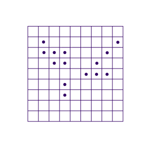

Computer Vision Services
- - enhance contrasts using gamma and other corrections
- - separate image regions by computing pixel value distributions and image thresholds
- - create and evaluate binary images
- - detect edges of objects using Gauss, gradient and a lot more filters
- - automatically or interactively measure distances from images
- - smooth textures and edges by morphology filters
- - and many more computer vision tools on customer demand
see also:
Machine Learning

predictive algorithms for big data